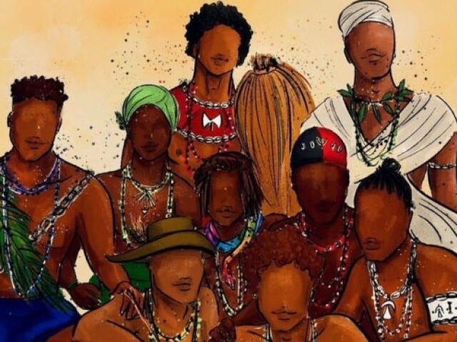
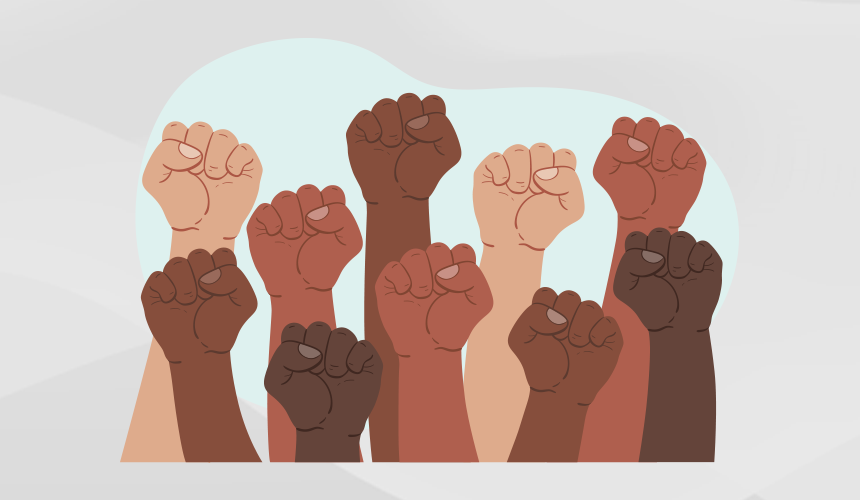

LUTA CONTRA DISCRIMINAÇAO RACIAL

Luta contra discriminaçao racial
HISTORIA DA ESCRAVIDÃO A escravidão no Brasil começou no início do século XVI com a chegada dos portugueses,
e o país se tornou o maior destino do comércio transatlântico de escravos, com mais de 4 milhões de africanos trazidos.
A economia brasileira dependia fortemente da mão de obra escrava em setores como açúcar, tabaco, ouro e café.
A ecravidão foi oficialmente abolida em 1888 com a lei Áurea, mas o legado da escravidão persiste na desigualdade racial e discriminação enfrentadas
pela população afro-brasileira até os dias de hoje.

_ _